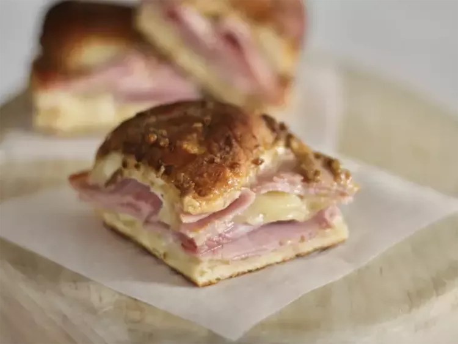

Baked Ham and Cheese Sliders

Description
These delicious oven-baked sliders are perfect whether you're feeding
a large crowd or a family of four. Home cooks gave this recipe high
marks for flavor and fun factor
Ingredients
- ¾ cup melted butter
- 1 ½ tablespoons Dijon mustard
- 1 ½ teaspoons Worcestershire sauce
- 1 ½ tablespoons poppy seeds
- 1 tablespoon dried minced onion
- 24 mini sandwich rolls or 12 large
- 1 pound thinly sliced cooked deli ham
- 1 pound thinly sliced Swiss cheese
Steps
-
Step 1
Gather all ingredients. Preheat the oven to 350 degrees F (175 C).
Grease a 9x13-inch baking dish.
-
Step 2
Mix butter, Dijon mustard, Worcestershire sauce, poppy seeds, and
dried onion in a bowl.
-
Step 3
Separate the tops from the bottoms of the rolls, arrange the bottom
pieces in a layer in the prepared baking dish. Layer about 1/2 of
the ham onto the rolls; add a layer of Swiss cheese and top with
with remaining ham slices.
-
Step 4
Place the tops of the rolls onto the sandwiches. Pour mustard mixture
evenly over the rolls
-
Step 5
Bake in the preheated oven until the rolls are lightly browned and
the cheese has melted, about 20 minutes. Slice into individual rolls
through the ham and cheese layers to serve.